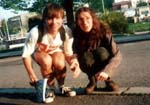
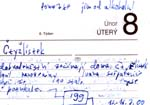
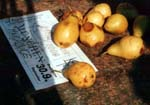
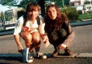
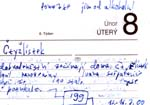
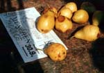
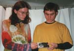
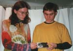

|
|
retrokruh krvik totr |
|
|
|
retrokruh krvik totr |
|
|
|
|
2000: Krvik Totr dlouze pili vodku Liho. Nato vydali album plné alkoholických počinů Liho. Zároveň však dlouze přemýšleli a jako výsledek těchto vteřin vydali velice depresivní a filozofické album Stříbrná strana 20. století. |
|
Čtyžlístek • mp3 Všechna
dobrodružství začínají doma. Čtyřlístek zrovna slavil
narozeniny Ivana Stěpanoviče Koněva, když se to stalo. Prase kozu
potrkalo. „Bobíku,
nech paní listonošku!“ volala Fifinka od buchet z kuchyně
oknem ven. „Co
nám nesete, paní Zajícová?“ zeptal se periskopem Myšpulín,
který na zahradě opravoval Ivanu Stěpanovičovi ponorku. „Mám
tady dopis pro pana Pinďu,“ oprašovala si listonoška potrkané místo. „Mat!“
napálil Pinďa Koněvova krále a už držel dopis v pacce. „Kdo
ti to píše, Pinďo?“ vyzvídala Fifinka od buchet. „Píšou
mi děti z 5. C. Poslouchejte:“ Milý
Pinďo! Na skupinové terapii nás napadlo, kolik dětí pije.
Nechceme, aby skončily v léčebně jako my. Myslíme si, že by
s tím Čtyřlístek měl něco dělat. Pomozte jim od alkoholu!
Přece se nebojíte opice! Děti
z 5. C. „Že
napsali zrovna tobě, Pinďo,“ jízlil se Bobík. „Já jsem
vzduch?“ „Zapomínáš,
že jsem bývalý alkoholik,“ Pinďa. „Léčil jsem se s jejich
paní učitelkou.“ Fifinka
od buchet vykoukla z kuchyně s prvním nápadem. „Vezmeme
všechen alkohol a dáme ho do buchet. Bobík je pak sní.“ „Ťuk
ťuk!“ zaklepal Bobík. „Copak jsem mišuge?“ „Pozveme
všechny děti z hospody a vystrojíme u Blaťáku skupinovou
terapii,“ navrhoval zkušený Pinďa. Vtom
se rozlétly dveře, a když se rozptýlil kouř, stál u stolu Myšpulín
s vynalézavým nápadem: „Terapie nic nevyřeší. Nejlepší
bude jít a všechny hospody vypít. Abych nezapomněl, tvá ponorka
je opravená, Ivane Stěpanoviči.“ „Qn`pham!
Na oplátku vám pomůžu vypít vodku.“ „Já
si beru na starost mrkvové čůčo,“ volal Pinďa. „A
já griotku,“ hlásila se od buchet Fifinka. „Já
pivo,“ olízl se Bobík. Myšpulín
na to šel vědecky. „Dám si to, co zbylo. A nazvu to Mrtvá máta.“ „Co
to je?“ dotíral maršál Koněv. „Zelená
s francovkou.“ „S
tím ti taky pomůžu,“ přibíral si maršál další práci. Jak
řekli, vypili. Nazítří
přišla veliká kocovina. Čtyřlístek v mátohách polehával
v postelích a děti ze zavřených hospod mu měnily studené
obklady. Nejhůře odpadl Ivan Stěpanovič Koněv, maršál Sovětského
svazu, který se zřídil jako carský důstojník a ještě v noci
šel se svou ponorkou ke dnu. Nejlépe si vedl zkušený Pinďa, který
teď seděl u stolu a psal do léčebny: Milé
děti! S dětmi to dopadlo dobře. S Fifinkou, Bobíkem a Myšpulínem
trošku hůř. Přijeďte se na ně podívat a příště si to zkuste
vypít samy. Přece byste se nebály opice. Váš Pinďa. © 2000 Bouillon/Faquire |
Z dobového tisku: Liho
tour Krvik Totr provedli nečestnou a nesportovní věc – nepomohli tomu (pak přejetému) slepci přes silnici. Ale to je vedlejší. Hlavně provedli věhlasně úspěšné Liho tour, kterým završili špičku letošku, jejž zdobí hlavička blanické vodky Liho. Šéf blanických ožralých rytířů Flaška je procpal do všech koutů a novotných světa. Začali v bistru U veselé kozy vedle zlíchovské podnikové prodejny, během dvou měsíců pak projeli všechny chlastfabriky na světě. Největší obdiv sklidili ve Finlandii, kde se ožrali s Amundsenem, a na mnichovském Bierfestu, kde toho nejvíc vypili. Každým dnem se nyní očekává příjezd rozkolébaného kamionu Liho, jejž domácká firma přestavěla na bejvák se skladem nápojů. A co bude? Krvik Totr prý zakončí Liho tour na pražské záchytce. |
© 2003 Krvik Totr Limity.


 


 
